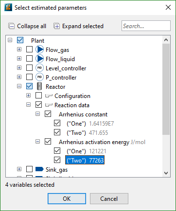

In order to define the form of objective function for the Experiment Design problem, click on the General tab in the Experiment Design entity editor and then choose the desired objective from the drop down menu at the top of the window as shown in the figure below.
In addition to the objective, it is necessary to define the parameters for which precise estimates are required by designing optimal experiments: these should be added to the Estimated Parameters table along with the current estimate for the Parameter value1Note: even though we call it a "parameter" to be estimated, it should be define in the gPROMS model as a variable and ASSIGNED in the Process entity.:
In order to define a new parameter to be estimated, use the Select parameters... button to populate the table using a dialog-based choice which will only display variables that the model developer has chosen to be suitable to be estimated. See the section on dialog-based variable choice in Model Validation.

Alternatively, click the <new> cell in the Variable name column of the Estimated parameters table and type the full pathname of the gPROMS variable. Note that pathname completion can be activated by pressing Ctrl-Space.
The full pathname may be converted to a descriptive name in case the model interface has been configured accordingly. Depending on the chosen application preferences, it may not be possible to edit the table directly.
For certain design criterions, scaling of the parameters can affect the solution obtained: so scaling of the parameter must be considered. To see all the values of parameters to be estimated with the same weight then these numbers should be the same.
A- and E-optimal designs depend strongly on the actual value of the parameters to be estimated. If one parameter is much larger than the rest, the design will most likely try to reduce the variance of this specific parameter. As a side-effect, the variances of the other parameters may be reduced as well, but these are not taken into account directly by the optimisation. In order to make the confidence ellipsoid, given by the variance-covariance matrix , as spherical as possible, it is advisable to scale all parameters to the same value, e.g. unity. On the other hand, if some parameters are supposed to be statistically more reliable than others, it is advisable to scale these parameters to a higher value than the rest.
In mathematical terms, we divide each parameter by its scaling factor :
This is the same as multiplying the variance-covariance matrix with the diagonal matrix ,
which leads to
The D-optimal design is invariant to scaling of the parameters to be estimated.